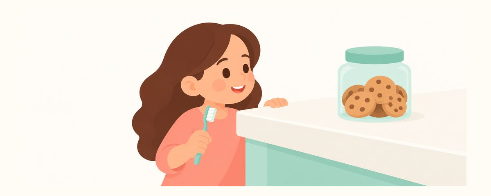

木糖醇真的能帮孩子预防蛀牙吗？现在的证据怎么说
木糖醇是比糖危害小的甜味，但要说它能防蛀，证据还很弱。这里整理了现在的证据、给孩子吃木糖醇糖果和口香糖时的注意事项，以及家里养狗时的保管方法。
要点速览
- 把木糖醇看作危害较小的甜食，不是防蛀用品
- 含氟牙膏和少吃甜食才是首要的
- 木糖醇对狗很危险，要放在够不着的地方
很多家长都把木糖醇口香糖或糖果当作“对牙齿好的零食”。孩子想吃甜的时，给木糖醇产品行不行呢？这篇文章整理了过去的说法、现在的证据，以及在家应该怎么看待它。
木糖醇，过去和现在有什么不同
木糖醇是一种代替糖提供甜味的甜味剂。口腔细菌不能像利用糖那样轻易把它变成酸，所以它不会引起蛀牙。因此很长一段时间里，它被当作能预防蛀牙的零食。
现在的看法有些变化了。“不会引起”蛀牙和“能预防”蛀牙是两回事。综合研究来看，木糖醇预防蛀牙的证据既不一致，也很薄弱。
- 美国儿童牙科学会（AAPD）在2025年撤销了木糖醇相关政策，没有说明理由。
- 在撤销之前，该政策就已指出，研究中使用的量（每天5–10克，分3–5次吃）并不现实。
- 显示出效果的情况，是蛀牙高风险的孩子每天以口香糖形式咀嚼5–6克以上、超过3次。
- 木糖醇糖果和软糖没有证实效果，而且大部分研究的质量为中等或较低。
不过，撤销政策并不代表木糖醇有害。与其把它看作“防蛀用品”，不如看作“比糖危害小的甜味”，这样比较恰当。
再来说说常见的误区。过去有一种说法：妈妈嚼木糖醇口香糖，孩子就不太会被传染致龋菌。这个效果目前也还没有定论。另外，木糖醇产品也不是可以随便吃的零食，吃太多可能会肚子痛或腹泻。
在家可以这样看待
- 预防蛀牙的基础是含氟牙膏。每天2次用含氟牙膏刷牙、减少吃甜零食的次数，才是首要的。木糖醇代替不了这两件事。
- 没必要特意给孩子吃木糖醇糖果或软糖。效果没有得到证实，所以不必因为“对牙好”而专门准备。
- 如果要给甜的，可以把它当作危害较小的选择。用来代替含糖的糖果就可以了。
- 口香糖要先考虑孩子的年龄和咀嚼能力。口香糖可能被吞下或卡住喉咙。先看看孩子能不能做到不吞下去、嚼完吐出来。
- 别让孩子吃太多。吃太多可能会肚子痛或腹泻。
家里养狗的话，包里、餐桌上、孩子手里拿着的口香糖盒，都请再留意一下。孩子吃的时候掉下的糖，也可能被狗捡去吃。
常见问题
孩子几岁可以嚼木糖醇口香糖？
比起年龄，更重要的是孩子能不能不吞下去、嚼完吐出来。口香糖可能卡住喉咙，没有把握的话，暂时不给更安全。如果担心，请咨询牙医或儿科医生。
吃木糖醇糖果就不会蛀牙了吗？
木糖醇糖果和软糖没有证实能预防蛀牙。它们只是比含糖糖果危害小一些，所以用含氟牙膏刷牙、控制吃零食的次数，都要照常坚持。
木糖醇牙膏怎么样？
选牙膏时最重要的是有没有含氟。比起有没有木糖醇，先确认氟浓度和规定用量。3岁以下用米粒大小，3岁起用豌豆大小。
政策被撤销了，是说木糖醇有害吗？
不是。撤销的理由没有公布，不应该理解为有害。不过吃多了可能闹肚子，所以要注意用量。
这些情况请看牙医
- 想知道孩子防蛀需不需要木糖醇时
- 孩子经常蛀牙，想制定适合孩子的预防方法时
- 孩子说牙齿酸，或者看到褐色污渍、白色带状痕迹时
- 吃了木糖醇产品后，肚子痛或腹泻持续时（也请一并咨询儿科）
在合适的时候收到提醒
在牙齿日历应用中输入孩子的出生日期（或预产期），这些文章就会在需要的时候以提醒的形式送达。免费使用，无需注册。
参考来源
- AAPD · Policy on the Use of Xylitol in Pediatric Dentistry (retired 2025) (2025)
- Cochrane · Xylitol-containing products for preventing dental caries in children and adults (2015)
- EAPD · The effect of xylitol chewing gums and candies on caries occurrence in children: a systematic review (Eur Arch Paediatr Dent) (2024)
- FDA · Paws Off Xylitol; It's Dangerous for Dogs (2025)
本应用中的信息仅供一般科普教育之用，不能替代专业的牙科诊疗。关于孩子的具体情况，请咨询牙医。